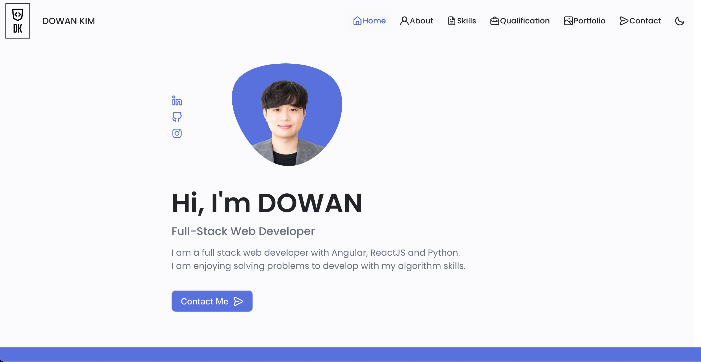
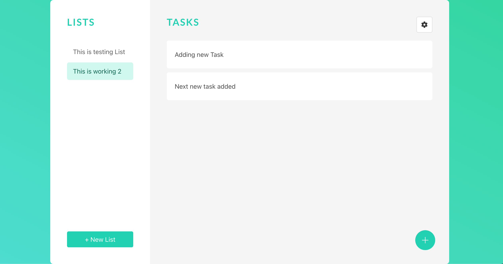

Portfolio
Most Recent Work

Portfolio Website
Personal Portfolio Website.
Skills : Angular, Swiper JS, Bulma
* Dark Mode is added (2022.10.17)

Task Manager App
Full Stack Application.
This app shows how I create and manage
api with data schemas.
skills: Angular, MondoDB, Bulma

Jujitsu Homepage
HTML/CSS/JS Homepage
This app shows how I handle HTML, CSS, JS
skills: HTML, CSS, JS